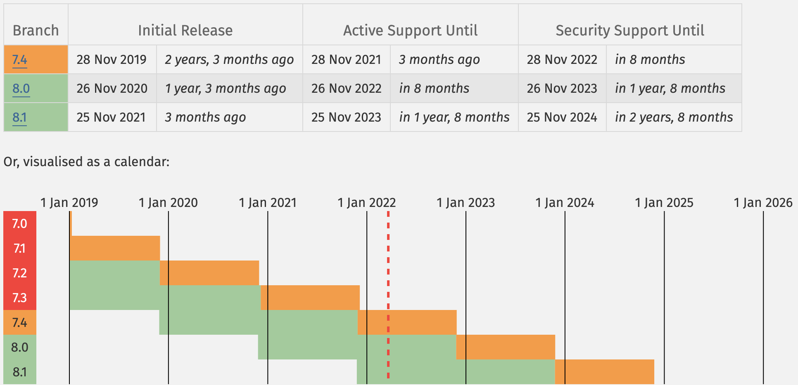
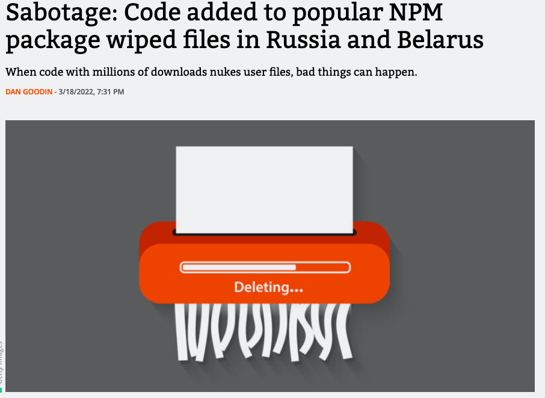

PHP Bergen - Composer
https://getcomposer.org
Package manager
- apt (Advanced package tool)
- npm (Node.js) / Bundler (Ruby)
PHP package managers
PECL (PHP Extension Community Library)
- PHP extensions
- written in C
pecl install xdebugPEAR package manager
PHP Extension and Application Repository
- CPAN-ish
- System wide
- PEAR packages
- Can install PECL extensions
Composer
Application-level package manager
Current versions and performance

Basic installation
composer require 'monolog/monolog'
composer remove 'monolog/monolog'
{
"require": {
"monolog/monolog": "^2.4.*"
}
}
Install dev packages
{
"require": {
"monolog/monolog": "^2.4"
},
"require-dev": {
"phpunit/phpunit": "^9.5"
}
}
Downgrade to older version
Dependency wrangling
composer require "monolog/monolog:2.3.0"Upgrade
composer outdatedcomposer update "monolog/monolog"Use libraries
require 'vendor/autoload.php';
$logger = new \Monolog\Logger('phpBergen');
$logger->pushHandler(
new \Monolog\Handler\StreamHandler(
__DIR__ . '/logs/demo.log',
\Monolog\Logger::WARNING
)
);
$logger->warning('PHP Bergen i progress');
Example 1
PHP-FIG (Framework Interoperability Group)
Autoloading
PSR-3: Logger Interface
composer.lock / composer.json
"name": "monolog/monolog",
"version": "2.4.0",
"source": {
"type": "git",
"url": "https://github.com/Seldaek/monolog.git",
"reference": "d7fd7450628561ba697b7097d86db72662f54aef"
}
Build application
composer install --no-devOutput == "deployable artefact".
Example: Docker container, tarball, ftp, rsync
Configuration
{
}
A minimum composer.json
The PHP Package Repository
Packagist is the main Composer repository. It aggregates public PHP packages installable with Composer.
Composer and git
"repositories": [
{
"type": "composer",
"url": "https://packages.drupal.org/7"
},
{
"type": "vcs",
"url": "git@git.app.uib.no:uib-ub/skeivtarkiv/ska_tags.git"
}
]
"require": {
"drupal/ska_tags": "^1.0"
}
Satis
Ultra-lightweight, static file-based version of packagist
{
"name": "My Repository",
"homepage": "http://packages.example.org",
"repositories": [
{ "type": "vcs", "url": "https://github.com/mycompany/privaterepo" },
{ "type": "vcs", "url": "http://svn.example.org/private/repo" },
{ "type": "vcs", "url": "https://github.com/mycompany/privaterepo2" }
],
"require-all": true
}
satis.json
Upgrade PHP
text
Platform with composer
"require": {
"php": ">=8.0.0",
"ext-curl": "*",
"ext-json": "*",
}
"config": {
"sort-packages": true,
"platform": {
"php": "8.1"
}
}
Check upgrade path
composer why-not php 8.2composer why-not php 7.1Supply Chain Security
Supply chain attacks
Ref: Code added to popular NPM package wiped files in Russia and Belarus
- https://getcomposer.org/doc/04-schema.md#minimum-stability
- http://fabien.potencier.org/signing-project-releases.html
- https://github.com/composer/composer/issues/4022